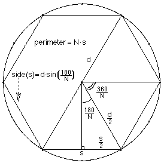
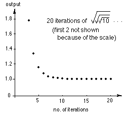

Answers for Chapter 10 Sample Problems
1. Kohler follows Archimedes
Kohler got the ratios p/d of 2.6, 3,
and 3.1 for the 3-, 6- and 12-sided
inscribed regular polygons. To generalize this ratio, let N = the # of
sides of the polygon and since we are doubling the # of sides N =
3*2f, d= the diameter of the circle, and s =
the length of one
side of the polygon.
From
the diagram at the right, sin(180/N) = s/2/d/2
and s = d*sin(180/N) or in radians, s = d*sin(Pi/N). A program in Basic to
get the first 10 ratios would be:
10 f = 0
20 N = 3*2f
30 Print N*sin(Pi/N)
40 f = f + 1
50 IF f>10 THEN STOP
60 GOTO 20
Running the program we get the infinite sequence 2.59807, 3, 3.1058,
3.1326, 3.1393, ... and after 10 loops, we get 3.14159... . Notice the
first 3 are very close to what Kohler had. And notice that we are
correct to 5 places for Pi!
4. Iterating the square root of a number.
This is the graph of
iterating the squart root of 10 (at the right).

A program in Basic, to
get 19 iterations,
would be:
- 10 INPUT N
- 20 For c = 1
to 20
- 30 N =
Sqrt(N)
- 40 PRINT N
- 50 Next c
6. Finding the square root of N by the
iteration of the averaging method.
Gayla, a 6th grader wrote this
program to get the square root
of N , starting with G
- 10 C=0
- 20 INPUT N
- 30 INPUT
G
- 40 G=(G+N/G)/2
- 50 C=C+1
- 60 PRINT G
- 70 If C is less than 19
THEN GOTO 40
- 80 END
Back to
Ch. 10 problems
To order Don's
materials
To choose sample problems from
other chapters
Mathman home